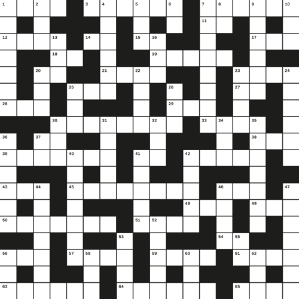

홍익대학교 디자인학부 시각디자인전공 졸업전시회 2016
Major in Visual Communication Design, School of Design,
Hongik University, Graduate Exhibition 2016
전시기간: 2016년 12월 9일 - 2016년 12월 14일
전시장소: 홍익대 대학로 아트센터 갤러리3
개전식: 2016년 12월 14일 수요일 오후 4시
Exhibition Period: December 14 - 19, 2016
Venue: Hongik Daehangno Art Center Gallery 3
Opening: Wednesday, December 14, 4PM
후원 Sponsors
AABB, HEYDEY, ORDINARY PEOPLE, POPURRI